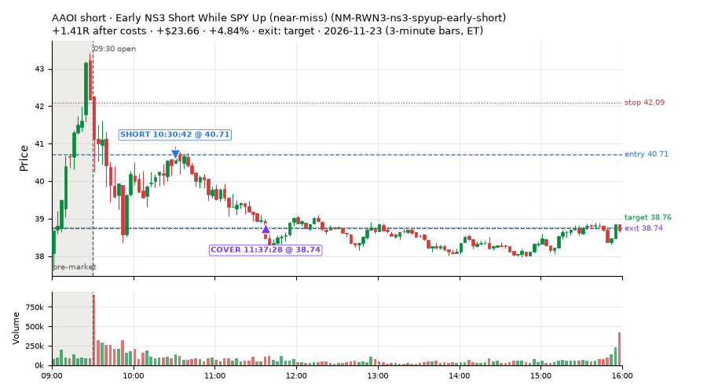
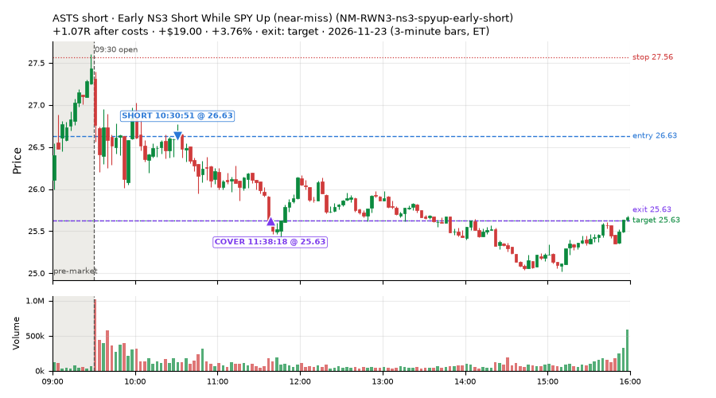
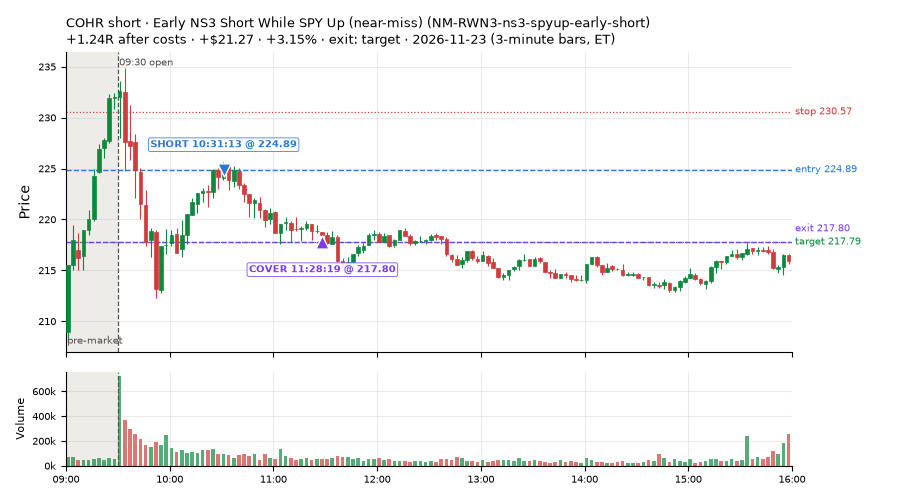
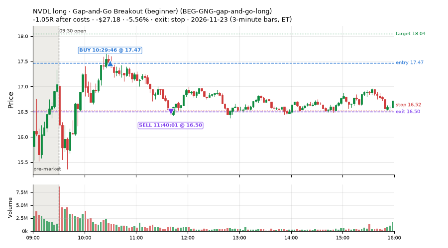
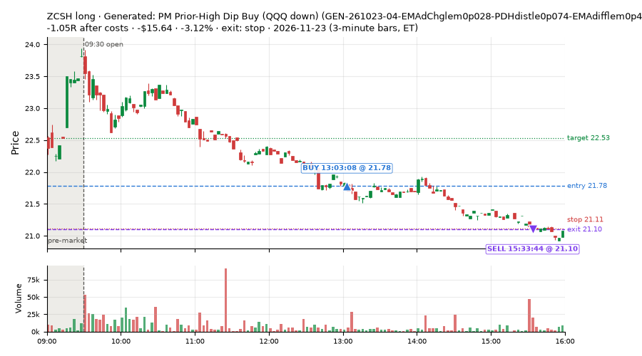
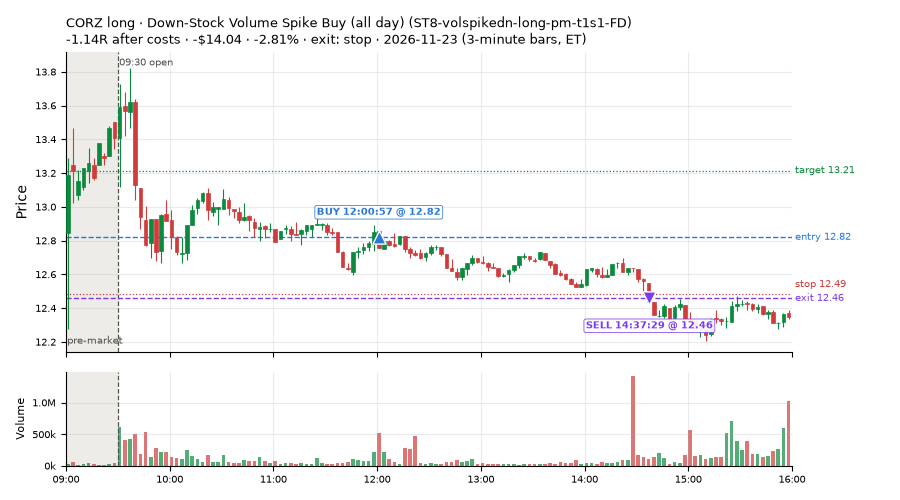
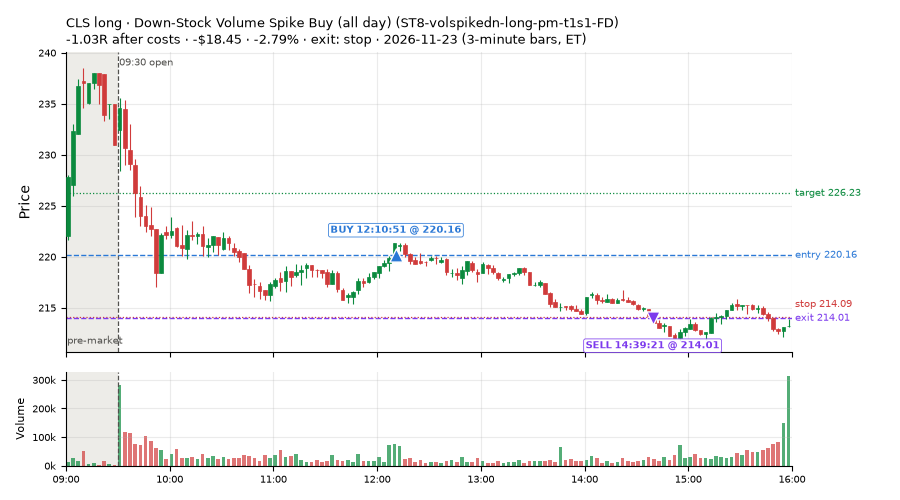
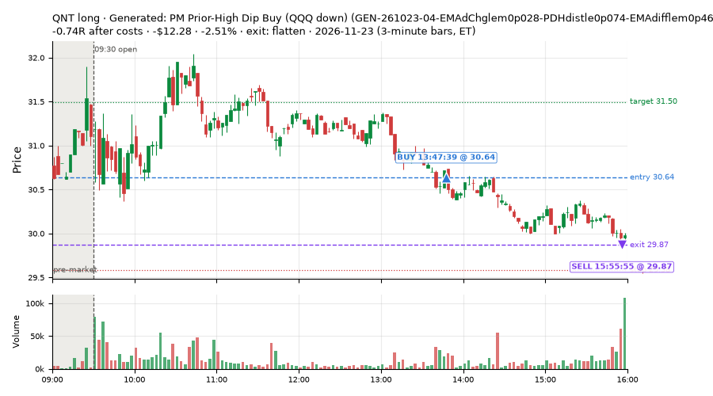

53 trades · win rate 36% · P/L $-74.46
PROBATION: no live setup has passed both locked test periods. 10 owner-directed setups added 2026-10-08 (MarcoFlow top 5 + 5 new), untested live. RW6G1 (RW6 + VWAP band guard) added 2026-10-09, probation.

| Symbol | Setup | Side | In | Out | Entry | Exit | Exit reason | % gained | P/L |
|---|---|---|---|---|---|---|---|---|---|
| AAOI | Early NS3 Short While SPY Up (near-miss) (NM-RWN3-ns3-spyup-early-short) | short | 10:30 | 11:37 | 40.71 | 38.74 | target | +4.84% | $23.66 |
| ASTS | Early NS3 Short While SPY Up (near-miss) (NM-RWN3-ns3-spyup-early-short) | short | 10:30 | 11:38 | 26.63 | 25.63 | target | +3.76% | $19.00 |
| COHR | Early NS3 Short While SPY Up (near-miss) (NM-RWN3-ns3-spyup-early-short) | short | 10:31 | 11:28 | 224.89 | 217.80 | target | +3.15% | $21.27 |
| Symbol | Setup | Side | In | Out | Entry | Exit | Exit reason | % lost | P/L |
|---|---|---|---|---|---|---|---|---|---|
| NVDL | BEG-GNG-gap-and-go-long | long | 10:29 | 11:40 | 17.47 | 16.50 | stop | -5.56% | $-27.18 |
| ZCSH | GEN-261023-04-EMAdChglem0p028-PDHdistle0p074-EMAdifflem0p46-PM-QQQltm0p6-t1s1-long | long | 13:03 | 15:33 | 21.78 | 21.10 | stop | -3.12% | $-15.64 |
| CORZ | ST8-volspikedn-long-pm-t1s1-FD | long | 12:00 | 14:37 | 12.82 | 12.46 | stop | -2.81% | $-14.04 |
| CLS | ST8-volspikedn-long-pm-t1s1-FD | long | 12:10 | 14:39 | 220.16 | 214.01 | stop | -2.79% | $-18.45 |
| QNT | GEN-261023-04-EMAdChglem0p028-PDHdistle0p074-EMAdifflem0p46-PM-QQQltm0p6-t1s1-long | long | 13:47 | 15:55 | 30.64 | 29.87 | flatten | -2.51% | $-12.28 |








Signal to fill: median 1s, 90th percentile 3s (53 trades). Bars close each minute; the order follows the bar close.
Best excursion (MFE): median 0.28R; worst (MAE) median 0.60R. 43% of trades never got +0.25R in our favour; 0 reached +1R and still closed at or below 0.
| Symbol | Setup | Best R | Worst R | Closed R |
|---|---|---|---|---|
| SQQQ | GEN-261027-08-ORBfailDn-FromPCATRlem0p96-LUNCH-QQQltm0p6-hold-short | +3.77 | -0.19 | +1.59 |
| TQQQ | IDX1-qqq100-0955-TQQQ-hold | +3.63 | -0.32 | +1.54 |
| PENG | ST4-emadn-long-am-t1s05-FD | +0.99 | -0.90 | -0.68 |
| PCOR | NM-RWN3-ns3-spyup-early-short | +0.44 | -1.00 | -1.06 |
| STZ | GEN-261027-08-ORBfailDn-FromPCATRlem0p96-LUNCH-QQQltm0p6-hold-short | +0.23 | -1.11 | -1.11 |
| Entry time | Trades | Win | Avg R | P/L |
|---|---|---|---|---|
| 09:50-10:30 | 12 | 50% | -0.01 | $-5.93 |
| 10:30-11:30 | 7 | 71% | +0.29 | $58.15 |
| 11:30-13:00 | 8 | 25% | -0.31 | $-36.85 |
| 13:00-14:00 | 9 | 22% | -0.20 | $-33.40 |
| 14:00-16:00 | 17 | 24% | -0.24 | $-56.43 |
| Setup | Trades | Win | Avg R after costs | Adj R (net of SPY) | Avg R ex-market (all sessions) | P/L |
|---|---|---|---|---|---|---|
| Gap-and-Go Breakout (beginner) (BEG-GNG-gap-and-go-long) | 3.0 | 0% | -0.64 | -0.41 | – | $-30.88 |
| Backside Lower-High Short (CWT04-backside-lh-a15-short) | 1.0 | 100% | +0.41 | +0.46 | – | $3.37 |
| Generated: Morning New-High Short (SPY down) (GEN-261019-08-NewHOD-Slope6ge0p03-DayRngVsPrevge1p5-AM-SPYdn-hold-short) | 1.0 | 0% | -1.13 | -1.25 | – | $-3.20 |
| Generated: PM Prior-High Dip Buy (QQQ down) (GEN-261023-04-EMAdChglem0p028-PDHdistle0p074-EMAdifflem0p46-PM-QQQltm0p6-t1s1-long) | 14.0 | 7% | -0.35 | -0.33 | -0.46 (beta +0.10, n 39) | $-74.89 |
| Generated: Late Failed-Breakdown Pop Short — WB4: 14:30-15:00, pop >= 0.20 ATR, ADX(7) >= 44 (GEN-261023-09-ORBfailDn-Ret15mge0p54-LATE-BRvwgt0p7-holdtr-short-WB4) | 1.0 | 100% | +0.04 | -0.13 | – | $0.39 |
| Generated: Lunch Failed-Breakdown Short (GEN-261027-08-ORBfailDn-FromPCATRlem0p96-LUNCH-QQQltm0p6-hold-short) | 2.0 | 50% | +0.24 | +0.74 | -0.22 (beta -0.42, n 51) | $4.21 |
| Index Dip Bounce 1 TQQQ (hold) (IDX1-qqq100-0955-TQQQ-hold) | 1.0 | 100% | +1.54 | +1.07 | – | $11.50 |
| * Oversold Pop with Breadth Turning Up (near-miss) (LD1-ns1-breadthup-t05s1-long) | 1.0 | 100% | +0.09 | +0.10 | -0.20 (beta +0.03, n 6) | $0.40 |
| Early NS3 Short While SPY Up (near-miss) (NM-RWN3-ns3-spyup-early-short) | 10.0 | 70% | +0.27 | -0.03 | +0.53 (beta +0.07, n 18) | $66.33 |
| Remedy-Q: Gap-Down Pop Fade, no entries after 12:30 (RW5-heat30-flowsell-rsi5pop-gapdn-short-FD-RQa-1230) | 2.0 | 50% | -0.31 | -0.91 | – | $-2.98 |
| EMA Cross-Down Dip Buy (all day) (ST4-emadn-long-am-t1s05-FD) | 3.0 | 33% | -0.16 | -0.29 | +0.01 (beta +1.18, n 31) | $-3.57 |
| RSI Collapse Dip Buy, Nasdaq-below-VWAP only (all day) (ST7Q-rsi50dn-qqqbelowvwap-long-t1s1-FD) | 1.0 | 100% | +0.93 | +0.81 | -0.14 (beta +0.82, n 19) | $8.26 |
| Down-Stock Volume Spike Buy (all day) (ST8-volspikedn-long-pm-t1s1-FD) | 13.0 | 23% | -0.27 | -0.26 | -0.02 (beta +0.99, n 32) | $-53.40 |
Market direction (SPY, beta 1) accounted for $16.44 of today's $-74.46; the rest ($-90.90) came from the setups themselves. Avg R net of SPY: -0.18 (incl. a hedge leg's cost; report only).
23 setups live today. Today: 122 signals, 53 taken, 2 lost because another setup held the symbol (2%). Since 2026-11-05 (13 sessions): 1678 signals, 676 taken, 24 lost to other setups (1%). Peak open positions today 35 of 400 slots. Earnings blackout removed 148 symbols before scanning.
Simulated playing time (not live): 996 what-if trades of signals not taken, avg +0.02R, 53% winners; of them 24 lost to another setup (avg -0.10R).
Silent: IDX2-spy075-0945-3x-trail, IDX5-spy050-0945-3x-trail, LD4-st4-breadthup-t1s05-long, LD8-spy-dip030-breadthturn-spxl-holdtr-long, GEN-261019-07-VolRatioge2-UpWickge0p59-DayRngVsPrevge1p5-LATE-SPYgt0p5-t05s1-long, GEN-261028-05-EMAdChgge0p093-ORLdistlem0p42-LAM-QQQgt0p6-holdtr-long
| Prio | Setup | Today sig / taken | Sessions | Signals / taken / trades | Taken/day | Expected/day | Lost to other setups | Lost to (setup n) | Top skip reasons | SIMULATED: not-taken n / avg R / win | Verdict |
|---|---|---|---|---|---|---|---|---|---|---|---|
| 1 | Remedy-Q: Gap-Down Pop Fade, no entries after 12:30 RW5-heat30-flowsell-rsi5pop-gapdn-short-FD-RQa-1230 | 5 / 2 | 1 | 5 / 2 / 2 | 2.00 | – | 0 | – | not shortable / shorts off 1, spread / quote / size 1, other 1 | 3 / +0.15R / 67% | slow 10.0 entries/week; ~6 weeks to 60 trades |
| 2 | Late-Day ETF Dip Buy — WB1: dip inside an up-hour NM-ETF-late-dip-di-long-WB1 | 0 / 0 | 5 | 6 / 6 / 6 | 1.20 | – | 0 | – | – | 0 / – | slow 6.0 entries/week; ~10 weeks to 60 trades |
| 3 | Gap-Down Rebound Overbought Short (all day) — WB4: no thin-R names, RSI(5) ≤ 90, slope ≤ 1.0 L3-gap-slope-rsi5hi-FD-WB4 | 10 / 0 | 5 | 34 / 3 / 3 | 0.60 | – | 0 | – | not shortable / shorts off 29, spread / quote / size 2 | 30 / +0.16R / 73% | slow 3.0 entries/week; ~20 weeks to 60 trades |
| 4 | Generated: Late Failed-Breakdown Pop Short — WB4: 14:30-15:00, pop >= 0.20 ATR, ADX(7) >= 44 GEN-261023-09-ORBfailDn-Ret15mge0p54-LATE-BRvwgt0p7-holdtr-short-WB4 | 1 / 1 | 5 | 1 / 1 / 1 | 0.20 | – | 0 | – | – | 0 / – | slow 1.0 entries/week; ~60 weeks to 60 trades |
| 5 | Index Dip Bounce 1 TQQQ (hold) IDX1-qqq100-0955-TQQQ-hold | 1 / 1 | 13 | 2 / 2 / 2 | 0.15 | – | 0 | – | – | 0 / – | slow 0.8 entries/week; ~78 weeks to 60 trades |
| 6 | * Oversold Slope Turn after an SPY Dip-Turn (near-miss) LD3-st2-idxturn-t05s1-long | 0 / 0 | 13 | 7 / 5 / 5 | 0.38 | – | 0 | – | spread / quote / size 1, other 1 | 2 / -0.32R / 50% | slow 1.9 entries/week; ~31 weeks to 60 trades |
| 7 | * Oversold Pop with Breadth Turning Up (near-miss) LD1-ns1-breadthup-t05s1-long | 1 / 1 | 13 | 8 / 6 / 6 | 0.46 | – | 0 | – | spread / quote / size 1, price through stop/target 1 | 2 / -0.30R / 50% | slow 2.3 entries/week; ~26 weeks to 60 trades |
| 8 | Backside Lower-High Short CWT04-backside-lh-a15-short | 4 / 1 | 13 | 9 / 1 / 1 | 0.08 | – | 0 | – | not shortable / shorts off 8 | 8 / +0.24R / 50% | slow 0.4 entries/week; ~156 weeks to 60 trades |
| 9 | Generated: Lunch Failed-Breakdown Short GEN-261027-08-ORBfailDn-FromPCATRlem0p96-LUNCH-QQQltm0p6-hold-short | 23 / 2 | 6 | 89 / 51 / 51 | 8.50 | – | 0 | – | not shortable / shorts off 21, other 11, spread / quote / size 6 | 38 / +0.18R / 68% | ok 42.5 entries/week |
| 10 | Generated: PM Upper-Wick Short (weak mkt) GEN-261022-05-MACDhge0p079-UpWickge0p71-ORHdistlem0p38-PM-BRoplt0p35-holdtr-short | 0 / 0 | 6 | 282 / 163 / 163 | 27.17 | – | 12 | GEN-261028-08-Ret5mge0p21-SMA20dlem0p16-Compress6le0p11-LUNCH-BRoplt0p35-holdtr-long 6, GEN-261020-03-MACDhge0p079-BarsSinceLODle5-MID-BRvwlt0p3-t05s05-long 4, ST4-emadn-long-am-t1s05-FD 1 | per-setup cap 41, spread / quote / size 27, other 24 | 119 / +0.63R / 82% | ok 135.8 entries/week |
| 11 | Gap-Down VWAP Loss Short, Slope Filter (near-miss) NM1-cwt09-g10-vwaploss-short | 12 / 0 | 13 | 94 / 5 / 5 | 0.38 | – | 0 | – | not shortable / shorts off 83, other 4, spread / quote / size 2 | 89 / -0.06R / 52% | slow 1.9 entries/week; ~31 weeks to 60 trades |
| 12 | Generated: PM Prior-High Dip Buy (QQQ down) GEN-261023-04-EMAdChglem0p028-PDHdistle0p074-EMAdifflem0p46-PM-QQQltm0p6-t1s1-long | 23 / 14 | 6 | 70 / 39 / 39 | 6.50 | – | 0 | – | spread / quote / size 16, other 15 | 31 / -0.42R / 36% | ok 32.5 entries/week |
| 13 | RSI Collapse Dip Buy, Nasdaq-below-VWAP only (all day) ST7Q-rsi50dn-qqqbelowvwap-long-t1s1-FD | 1 / 1 | 13 | 29 / 19 / 19 | 1.46 | – | 0 | – | spread / quote / size 8, other 2 | 10 / -0.39R / 30% | slow 7.3 entries/week; ~8 weeks to 60 trades |
| 14 | Early NS3 Short While SPY Up (near-miss) NM-RWN3-ns3-spyup-early-short | 13 / 10 | 13 | 38 / 18 / 18 | 1.38 | – | 0 | – | spread / quote / size 10, not shortable / shorts off 7, other 3 | 20 / +0.64R / 85% | slow 6.9 entries/week; ~9 weeks to 60 trades |
| 15 | Generated: PM Gap-Up Dip Buy (MACD falling) GEN-261029-03-MACDhlem0p12-Ret5mlem0p062-Gapge2-PM-QQQup-hold-long | 0 / 0 | 6 | 6 / 3 / 3 | 0.50 | – | 0 | – | other 2, spread / quote / size 1 | 3 / +0.36R / 67% | slow 2.5 entries/week; ~24 weeks to 60 trades |
| 16 | Early Sellers, Mid-High RSI MF2-open-rsimidhi-flowsell | 0 / 0 | 13 | 69 / 16 / 16 | 1.23 | 1.30 | 0 | – | spread / quote / size 21, per-setup cap 19, other 8 | 53 / -0.34R / 26% | slow 6.2 entries/week; ~10 weeks to 60 trades |
| 17 | Generated: Open RSI Surge Short (wide day) GEN-261026-08-RSIslopege19-Ret5mge0p063-DayRngVsPrevge1p2-OPEN-SPYup-holdtr-short | 0 / 0 | 6 | 30 / 13 / 13 | 2.17 | – | 0 | – | spread / quote / size 16, not shortable / shorts off 1 | 17 / +1.82R / 76% | slow 10.8 entries/week; ~6 weeks to 60 trades |
| 18 | Stretched Below VWAP Bounce (far) CWT13-vwapstretch-z075-long | 0 / 0 | 13 | 171 / 60 / 60 | 4.62 | – | 0 | – | per-setup cap 67, spread / quote / size 22, other 22 | 111 / -0.19R / 40% | ok 23.1 entries/week |
| 19 | Down-Stock Volume Spike Buy (all day) ST8-volspikedn-long-pm-t1s1-FD | 17 / 13 | 13 | 47 / 32 / 32 | 2.46 | 1.05 | 3 | NM-RWN3-ns3-spyup-early-short 2, MF2-open-rsimidhi-flowsell 1 | spread / quote / size 8, symbol held by another setup 3, other 3 | 15 / -0.17R / 53% | slow 12.3 entries/week; ~5 weeks to 60 trades |
| 20 | EMA Cross-Down Dip Buy (all day) ST4-emadn-long-am-t1s05-FD | 3 / 3 | 7 | 64 / 31 / 31 | 4.43 | 2.77 | 7 | GEN-261022-05-MACDhge0p079-UpWickge0p71-ORHdistlem0p38-PM-BRoplt0p35-holdtr-short 6, GEN-261027-08-ORBfailDn-FromPCATRlem0p96-LUNCH-QQQltm0p6-hold-short 1 | spread / quote / size 14, other 11, symbol held by another setup 7 | 33 / -0.21R / 36% | ok 22.1 entries/week |
| 21 | Failed VWAP Reclaim Short, Weak Tape ULT-09-failed-vwap-reclaim-short | 0 / 0 | 2 | 7 / 2 / 2 | 1.00 | – | 0 | – | spread / quote / size 5 | 5 / +0.28R / 80% | slow 5.0 entries/week; ~12 weeks to 60 trades |
| 22 | Generated: Morning New-High Short (SPY down) GEN-261019-08-NewHOD-Slope6ge0p03-DayRngVsPrevge1p5-AM-SPYdn-hold-short | 4 / 1 | 2 | 10 / 1 / 1 | 0.50 | – | 0 | – | spread / quote / size 6, other 2, not shortable / shorts off 1 | 9 / +1.71R / 78% | slow 2.5 entries/week; ~24 weeks to 60 trades |
| 23 | Gap-and-Go Breakout (beginner) BEG-GNG-gap-and-go-long | 4 / 3 | 1 | 4 / 3 / 3 | 3.00 | – | 0 | – | spread / quote / size 1 | 1 / +1.16R / 100% | ok 15.0 entries/week |
Every trade is attached as a CSV you can open and edit in Excel or Google Sheets. Live page: https://misiti15.github.io/MCF/live/